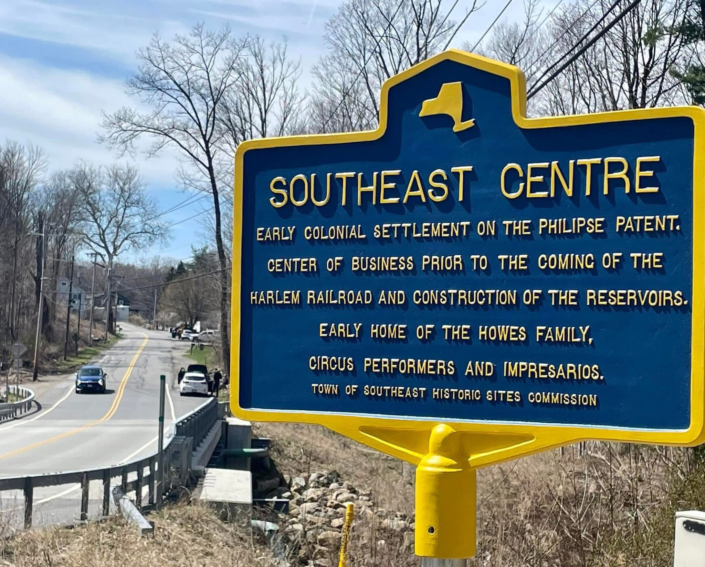

Southeast Centre
Sodom Road at Brewster Hill Road.

SOUTHEAST CENTRE
Early colonial settlement on the Philipse Patent.
Center of business prior to the coming of the
Harlem Railroad and construction of the reservoirs.
Early home of the Howes family,
circus performers and impresarios.
About this Marker
Southeast Centre — known locally as Sodom or Sodom Corners — was a working community older than the Town of Southeast itself. The earliest documentary record is a 1745 highway survey naming the John Dickinson mill at this intersection. By 1796, the first formal town meeting was held at Zalmon Sanford’s house, “at the meeting of three roads at the foot of Brewster Hill.” A 1756 affidavit lists more than 300 settlers as tenants of the Philipse family in the region — surnames that include Crane, Crosby, Foster, Cole, Paddock, Barnum, Howes, Knox, Reed, Townsend, Warren, and Yale. The same families were still on the deed record at this corner a century and a half later, when New York City came for the land.
By the 1850s and 1860s this was a complete agricultural village: a grist mill on the East Branch of the Croton River, a blacksmith shop, a carriage and chair factory at the intersection, two boot and shoe manufactories, a fur-hat shop (Burch & Beers), a tannery, a Presbyterian meeting house dedicated June 1854, a parsonage, and a district schoolhouse at the top of the hill. Behind them, working farms running back from the road totaling more than 1,400 acres of cultivated ground.
The watershed proceedings opened with the New Aqueduct Notice published in the Brewster Standard on July 22, 1887. Over the next decade and a half — through the Sodom Dam proceeding (awards published July 11, 1890), the Brewster Sanitary proceeding (1893), the Double Reservoir I proceeding (maps filed May 14, 1896), and supplementary takings running through 1900 — the City of New York condemned at least 1,471 acres around this intersection. The grist mill went. The carriage factory was demolished in December 1889. The schoolhouse was condemned. The Presbyterian church was sold on July 1, 1891 to John R. Yale and James D. Baxter for $104, and the meeting house pulled down. Mud Pond — the natural lake at the village’s center, called Lake Kishawana on some maps — was condemned as Parcel 79: 23.549 acres of water, taken as if it were a farm.
But the takings stopped at the road. The street-facing village lots were too small and too residential to be worth the City’s trouble, and a small cluster of them survived. The marker stands beside the modern bridge across the East Branch Reservoir — the water visible to the west covers what was once the village center.
Two Markers, One Story
A companion marker stands a short drive away at the intersection of Milltown Road and Old Milltown Road, near the reservoir loop road, also sponsored by the Town of Southeast Historic Sites Commission: “East Branch Reservoir — Put in service in 1891 & connected by tunnel to Bog Brook Reservoir to impound nearly 10 million gallons of clean water for the Croton Reservoir to meet the growing demands of NYC.” The two markers, taken together, tell the town’s preferred story: a colonial settlement, a business center, the home of a famous circus family, the construction of reservoirs that brought clean water to New York City. Each statement is true. Each is also incomplete in the same way. Neither marker names the families displaced by the watershed taking. Neither cites the July 1890 Awards article. Neither mentions that the “construction of the reservoirs” was the same event as the end of the village.
Town of Southeast, NY
Sources
- On-site photograph of the Town of Southeast Historic Sites Commission marker.
- Southeast Centre research project on this site — the full sourced narrative this entry draws from, including primary-source documentation of the New Aqueduct Notice (Brewster Standard, July 22, 1887), “The Awards” (Brewster Standard, July 11, 1890), and the Double Reservoir I proceeding (Map 799, filed May 14, 1896).
- Louise Hasbrouck Zimm et al., Southeastern New York: A History of the Counties of Ulster, Dutchess, Orange, Rockland and Putnam, Vol. II (Lewis Historical Publishing, 1946) — key passages on 1745 highway survey, 1756 Philipse tenant list, and total reservoir project cost.